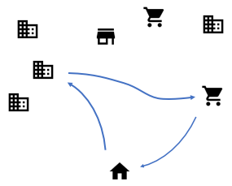

Destination choice models
More pages in this category:
# Introduction
Both common experience in practice as well as academic research[1] have found that trip distribution models are the largest source of error in travel forecasting. Destination choice models have consistently demonstrated the ability to better reproduce observed travel patterns than gravity models, both through the incorporation of additional variables, as well as by reflecting more complex statistical assumptions, such as capturing spatial autocorrelation.[2] Although gravity models remained the most common form of trip distribution model as recently as 2013, given these considerations, logit-based destination choice models have become an increasingly common replacement for gravity models to improve the accuracy of the trip distribution step. Destination choice models are potentially even more advantageous over gravity models for longer distance personal travel and multinucleated travel regions, and have therefore been widely incorporated in statewide travel models (e.g., Arizona, California, Idaho, Iowa, Maryland, New Hampshire, Ohio, Oregon, Tennessee, Wisconsin, etc.). Large metropolitan area travel models have also been quick to adopt destination choice models, but there are also many examples of small and medium-sized metropolitan area models now using or developing destination choice models including South Bend, Evansville, and Columbus, Indiana; Ann Arbor, Michigan; Burlington, Vermont; Knoxville and Chattanooga, Tennessee; Charlottesville, Virginia; Charleston, South Carolina; and Jacksonville, Florida.

Destination choice models are a type of trip distribution or spatial interaction model which are formulated as discrete choice models, typically logit models. They can be thought of as a generalization of the traditional and widely used gravity model. In practice, this flexible and extensible formulation allows destination choice models to provide a better behavioral basis for trip distribution than the traditional gravity models, by allowing for a wider range of explanatory variables. Although technically gravity models can be considered a subset or special case of destination choice models, the term “destination choice models” typically is used to identify models that incorporate additional variables beyond size/attractions, impedance/friction factors and constants or k-factors. (see, for example, [3][4][5][6][7][8]).
# Advantages and Limitations of Destination Choice Models
Although the gravity analogy may still be appropriate for trip distribution in mono-centric urban regions where accessibility to transit plays little to no role in choice of destination, this is no longer the case in many urban areas, where there may be more than one dominant attraction region, multiple and important suburban-to-suburban trip flows, and where there is interest in understanding the contribution of transit towards achieving more sustainable urban development patterns. The gravity model often times exhibits incorrect demand elasticities; in particular, the model may respond illogically to changes in levels of service where improved accessibility to a given destination may cause a disproportionate increase in total trips, and/or an increase in trips using the mode(s) whose accessibility did not change. Both of these results are undesirable and may lead to erroneous assessments of the impact of transit or highway improvements. Destination choice models can overcome these gravity model limitations. With appropriate specifications of utility, consistency between changes in levels of service and changes in demand can be assured when using well validated destination choice models. In addition, because the functional form of the destination choice utility is very flexible, accounting for singularities in the trip distribution pattern can be accomplished in intuitive ways. For example, to inform a gravity model of the presence of a natural barrier, such as a river, a K-factor is often used. With a destination choice model, a term can be added to the utility equation, statistically estimated from observed data, and interpreted in terms of equivalent minutes of travel time; a much more data-based and intuitive measure of the impact the river would have on a person's travel choice.
While a key advantage offered by destination choice models when compared to the more traditional gravity model is their ability to consider additional factors, at the same time it is also important to recognize destination choice models in practice today still struggle to explain the spatial distribution of personal travel. This is due in large measure to the the importance of unobserved attributes such as the price and quality of goods and services provided at destinations. In many cases, a destination choice model may be able to double the goodness-of-fit, or explain twice as much of the observed travel patterns than a gravity model, but in the end still explain less than half of the variation in the observed patterns.
Both the advantages and limitations of destination choice models can be understood in terms of the factors that affect travelers' destination choices based on those the models can incorporate or reflect and those they cannot. The table below describes some of these advantages and limitations.
| Observed Variables | Gravity Models | Destination Choice Models | Not in Models |
|---|---|---|---|
| Number of Households | X | X | |
| Number of employees by industry | X | X | |
| Travel Time and/or distance | X | X | |
| River crossings, highway crossings & other known psychological barriers | X | ||
| Where the traveler lives | X | ||
| Traveler's income, etc. | X | ||
| Proximity of similar, competing destinations | X | ||
| Convenience of destinations to other attractive places | X | ||
| Walkability, density, mix of uses at destinations | X | ||
| Parking Prices and Availability (sometimes) | X | ||
| Unobserved Variables | Gravity Models | Destination Choice Models | Not in Models |
| Simple Random Variation | X | X | |
| Other Traveler Attitudes / Preferences (toward price and quality of goods/services, etc.) | X | ||
| Spatial Autocorrelation / Unobserved homogeneity of destinations | X | ||
| Price of goods/services provided at the destination | X | ||
| Quality of goods / services provided at the destination | X | ||
| Occupation of workers in residences | X | ||
| Social relationships (friendships, familial relations) | X | ||
| History/habit (this used to be the best pizza place) | X | ||
| Aesthetics | X |
# Destination Choice Models in Practice
Destination choice models can be used in aggregate trip-based models as an alternative to gravity models or other spatial interaction models. Destination choice models are standard and ubiquitous in tour-based and activity-based models.
As of 2005, 5% of MPOs were using destination choice models[9], mostly for trip distribution in aggregate trip-based models. As of 2014, based on a survey by TMIP, 9% of MPOs & DOTs were using a tour-based or activity-based model and an additional 17% were in the process of developing them. Destination choice models are therefore likely currently in use in approximately 15% of travel models and likely to be used in roughly a third of models in the relatively near term future.
As noted above, destination choice models have been incorporated into the travel model framework in several states and regions (see Chattanooga, Tennessee for a regional example and Iowa for a statewide example.)
For tips on things to check when developing or using a Destination Choice Model, check out this page.
# Destination Choice: Theoretical Foundations
Destination choice (and trip distribution) models can be derived from a variety of theoretical starting points, the most common of which are entropy maximization and random utility theory. Both approaches generate mathematically similar functional forms that can generally be classed as spatial interaction models. These theoretical foundations define the basic assumptions of destination choice models, their functional forms and parameter estimation requirements.
# Destination Choice: Mathematical Formulation
The most common mathematical formulation of destination choice is the multinomial logit (MNL) model. Gravity models, which are commonly used in aggregate, trip-based models, can be shown to be a special case of a MNL destination choice model.[10] Another type of early trip distribution model is the intervening opportunities model,[11] but this model has fallen into disuse in North America. On the other hand, data-driven approaches are emerging, facilitated by the availability of passive origin-destination big data.
# Destination Choice Set Formation
Choice set formation is a critical step in the specification, estimation, and application of all discrete choice models, including destination choice. As noted by Thill (1992), the misspecification of choice sets can have adverse effects on parameter estimates and resultant computations of predicted choice probabilities. The accurate definition of the destination choice set has been an issue of much interest to the profession and a variety of approaches have been developed and adopted in research and practice. The problem is of acute significance in the context of destination choice modeling because the number of elemental alternatives can be very large. With many travel demand model systems comprising thousands of zones, destination choice sets can prove to be extremely large. On the one hand, methodological and computational advances now allow the use of the universe of locations as the destination choice set. On the other hand, the use of universal set of destinations as the choice set may compromise the behavioral representativeness of destination choice models. The analyst needs to consider the pros and cons of alternative approaches carefully when defining destination choice sets.
# Joint/Conditional Destination Choices
In traditional four-step travel models, all destination choices are assumed to be independent. This is reflected in the fact that gravity or destination choice models in this context are run in parallel and independently of each other. Both activity-based, hybrid, and advanced trip-based frameworks have developed different approaches to relaxing this assumption of independence. Each of these approaches is presented here.
# Factors Affecting Destination Choice
Typically, zone-based destination choice models will incorporate a utility function that includes two categories of explanatory factors: qualitative factors (how good are the choices in a given destination zone), and quantitative factors (how many individual choices are in a zone). The usage of qualitative explanatory factors is common in virtually all choice models. For destination choice models, these commonly include impedance, accessibility, psychological boundaries, and other destination qualities, as well as traveler attributes. The quantitative factors, typically labeled as size terms or attractions, are an unusual feature of destination choice models, which arise because the "alternatives" represented in the model, often TAZs, are not actually the choices, but they represent a pool of choices. The actual choice is instead one particular activity point (job, store, theatre seat, etc.) within the zone. Due to this distinction, factors that represent the quantity (instead of quality) of choices in a zone need to be treated differently in the mathematical formulation, as documented here. A more extensive description of the various factors in destination choice models is found here.
# Destination Choice: Data Sources
The flexibility of destination choice models comes at a cost. While it is possible to represent the selection of trip destinations more rigorously, destination choice models tend to require more data and data with higher fidelity than traditional [. There are two types of data that are relevant for destination choice models. Observed choice data describe origin-destination flows that have been observed in a survey, by counting or by passive data collection. Explanatory data, on the other hand, refer to input data that describe either destinations or characteristics of the decision maker who chooses the destination. Further discussion on data sources is available here.
# Destination Choice: Parameter Estimation
Once observed choices and explanatory variables from data are related by formulating a utility function, the challenge becomes estimating the parameters that quantify these relationships or how explanatory variables contribute to destination choice probabilities. Rather than a one time effort, this is commonly an iterative process in which alternative specifications of the utility function are tested. The parameter estimation process is based in statistical / econometric theory and generally relies on maximum likelihood estimation (MLE) techniques. Specialized software or custom programming is generally required. Algorithmic approaches to MLE for destination choice models generally fall into two general families: gradient-based and metaheuristics. For more information see here.
# Destination Choice: Calibration and Validation
In practice, destination choice models can rarely be applied for forecasting exactly as they are estimated. Calibration adjustments are commonly required for several reasons. Sometimes application of the model to application data sets produce results that differ in some important ways from the results when the model is applied to the estimation data sets. In some cases such differences can be caused or exacerbated by inconsistencies between the model estimation and application (such as different sources for explanatory variables like income or travel time or the omission of constraints in estimation). Careful and thoughtful adjustments in keeping with good professional judgment can be required in order ensure the applied model demonstrates both reasonable ability to replicate observed travel patterns (from both estimation data and in some cases, other independent data sources for validation) and reasonable response properties or elasticities to key variables. A variety of measures can be used to evaluate the validity of destination choice models. Comparisons to trip length frequency distributions remain the most common approaches although it has been demonstrated that models can easily be over-calibrated to reproduce trip length frequency distributions at the expense of their ability to accurately reproduce actual spatial interaction patterns.[12] Various strategies can be and are commonly employed such as adjustments to distance or impedance parameters, the assertion of size or mode choice logsum parameters, and the use of constants. For more information on calibration and validation see here.
# Destination Choice: Implementation and Application
Destination choice models can be implemented in various ways in different travel modeling frameworks. They can be applied disaggregately in activity-based models using Monte Carlo simulation or aggregately in trip-based models using matrices. In both of these contexts, there are important issues related to how destination choice models are integrated with the larger model system. Key issues include how various destination choices are related to each other, how choices of destination and mode are related to each other, and how the larger model system acheives an equilibrium between travel demand and supply, commonly through iterative feedback loops. For more in-depth discussion, click here.
# References
Zhao, Y. and K. Kockelman (2002) 'The Propagation of Uncertainty through Travel Demand Models', Annals of Regional Science 36 (1), pp.145-163 ↩︎
Bernardin, V. L., F. Koppelman, and D. Boyce. Enhanced Destination Choice Models Incorporating Agglomeration Related to Trip Chaining While Controlling for Spatial Competition. In Transportation Research Record: Journal of the Transportation Research Board of the National Academies, Washington, D.C., 2009, pp. 143-151. ↩︎
Bernardin, V. L., F. Koppelman, and D. Boyce. Enhanced Destination Choice Models Incorporating Agglomeration Related to Trip Chaining While Controlling for Spatial Competition. In Transportation Research Record: Journal of the Transportation Research Board of the National Academies, Washington, D.C., 2009, pp. 143-151. ↩︎
Chow, L.-F.,, F. Zhao, M.-T. Li, and S.-C. Li. Development and Evaluation of Aggregate Destination Choice Models for Trip Distribution in Florida. In Transportation Research Record: Journal of the Transportation Research Board of the National Academies, Washington, D.C., 2005, pp. 18-27 ↩︎
Jonnalagadda, N., J. Freedman, W. A. Davidson, and J. D. Hunt. Development of Microsimulation Activity-Based Model for San Francisco: Destination and Mode Choice Models. In Transportation Research Record: Journal of the Transportation Research Board of the National Academies, Washington, D.C., 2001, pp. 25-35. ↩︎
Bhat, C., A. Govindarajan, and V. Pulugata. Disaggregate Attraction-End Choice Modeling: Formulation and Empirical Analysis. In Transportation Research Record: Journal of the Transportation Research Board of the National Academies, Washington, D.C., 1998, pp. 0-68 ↩︎
Borgers, A., and H. Timmermans. Choice Model Specification, Substitution and Spatial Structure Effects: A Simulation Experiment. Regional Science and Urban Economics, Vol. 17, 1987, pp. 29-47 ↩︎
Fotheringham, A. S. Some Theoretical Aspects of Destination Choice and Their Relevance to Production-Constrained Gravity Models. Environment and Planning, Vol. 15A, 1983, pp. 464-488 ↩︎
SR 288-Metropolitan Travel Forecasting Current Practice and Future Direction ↩︎
Daly, A. Estimating Choice Models Containing Attraction Variables. Transportation Research B, Vol. 16B, No. 1, 1982, pp. 5–15. ↩︎
Stouffer, S. Intervening Opportunities: A Theory Relating Mobility and Distance. American Sociological Review, Vol. 5, 1940, pp. 845–867. ↩︎
Ye, X., W. Cheng and X. Jia (2012) "Synthetic Environment to Evaluate Alternative Trip Distribution Models." Transportation Research Record: Journal of the Transportation Research Board, No. 2302: p. 111-120. ↩︎